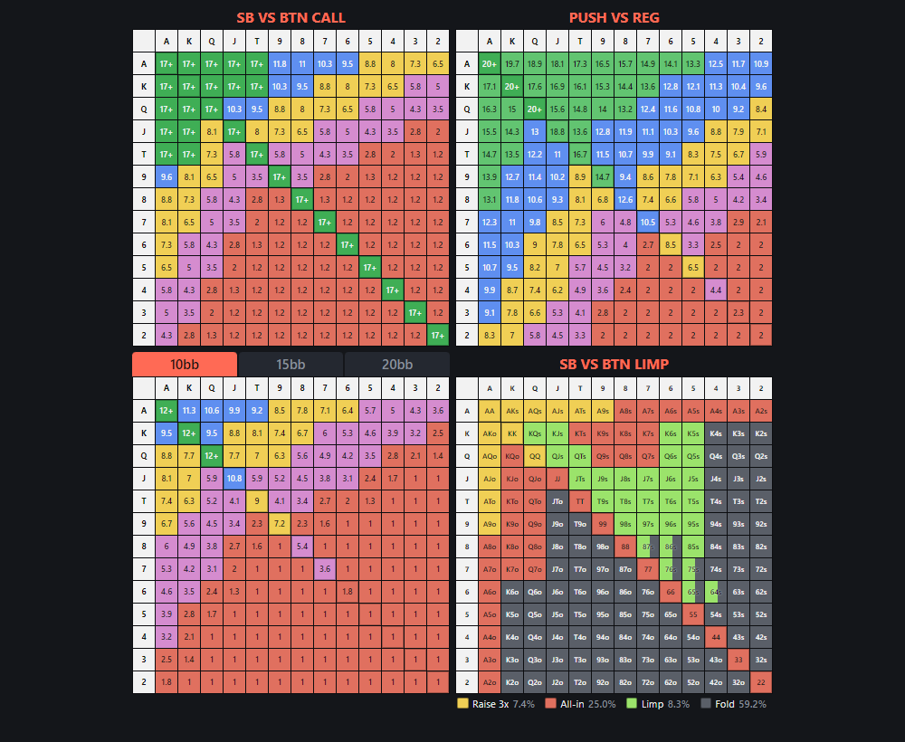
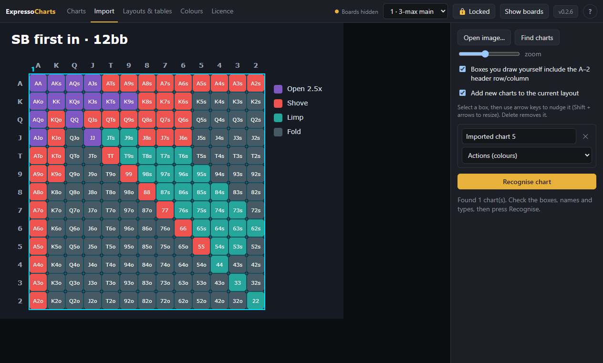
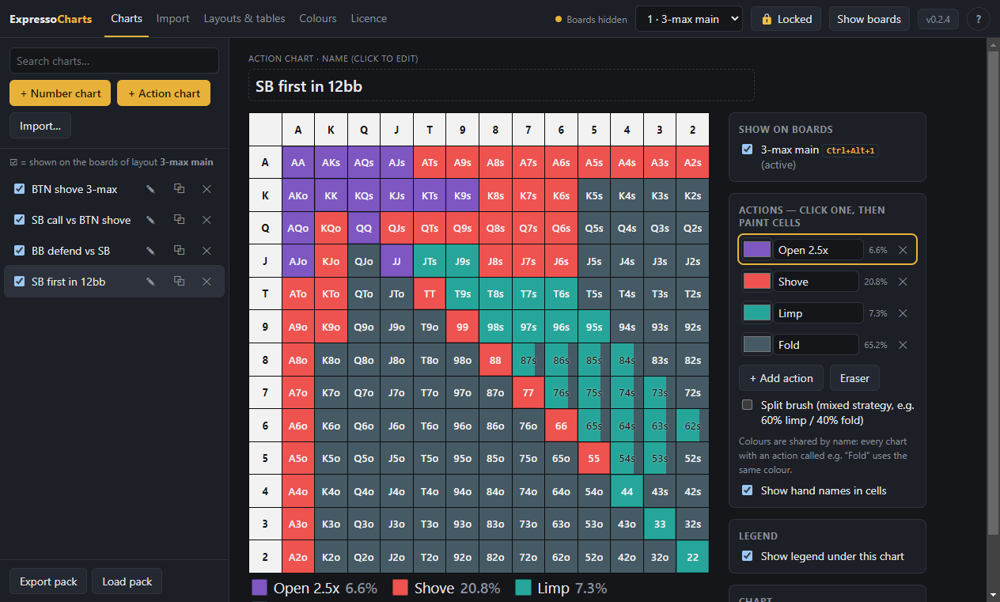
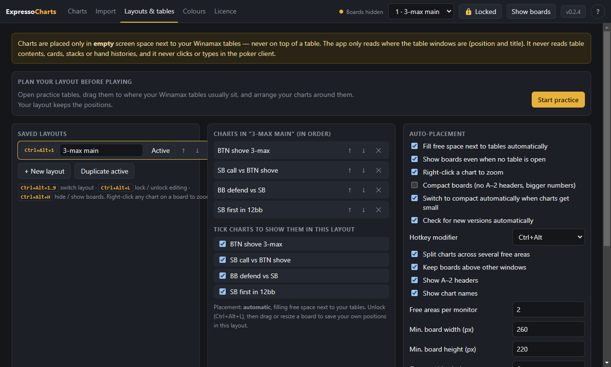

Your preflop charts, always next to the table.
Drop in screenshots of your charts. Expresso Charts turns them into one clean, readable style and fills the free space beside your tables, on every monitor.
Windows 10 / 11 · Charts stay on your PC · Cancel any time

Boards fill the free space beside your tables and never cover them.
Everything you need while you grind
Built for fast 3-max formats, where you need the right chart at a glance and nothing in your way.
Import from screenshots
Paste or drop an image. Every chart in the picture is found automatically, even 8 in one screenshot, and the numbers, colours, titles and legend names are read for you.
One clean style
Charts from different coaches and tools all get the same colours and layout, so you read them instantly. Fully editable.
Fills the free space
Boards are placed next to your tables automatically, on every monitor, and move when your tables move. Or drag them exactly where you want.
Number & action charts
Stack-size charts (8.5, 17+…) and colour charts (all-in, limp, fold) with split cells for mixed strategies and a legend with range percentages.
Layouts & hotkeys
Save layouts and switch with Ctrl+Alt+1…9. Group 10bb / 15bb / 20bb charts into tabs and flip them all with one key. Right-click to zoom.
Private by design
Your charts are stored only on your computer, encrypted. Nothing is uploaded. The app windows can't be screenshotted or screen-shared.
How it works
Set up once in a few minutes, then just open your tables.
Import your charts
Paste a screenshot (Ctrl+V) or drop an image. Every chart in it is found and read automatically, numbers and colours alike.
- One screenshot can contain many charts.
- Titles and legend names are read for you.
- Hard-to-read cells are highlighted for a quick check.

Tidy them up
Fix any cell with a click, rename actions, paint mixed strategies and turn on a legend. Every chart follows the same colour style.

Pick a layout and play
Tick which charts belong to a layout. When your tables open, the charts appear in the free space next to them, on every monitor.
- Ctrl+Alt+1…9 switches layouts, Ctrl+Alt+L locks or unlocks positions.
- Ctrl+Alt+PageDown flips all stack-depth tabs at once.
- Practice mode: plan your layout before playing with placeholder tables you drag where your real tables go.
- Tables fill your main screen? The charts move to your second monitor.

Built for fair play
Expresso Charts is a reference tool: it shows the charts you prepared before playing, nothing more.
What it does
- Shows your own static charts, prepared in advance
- Reads only where your table windows are, to place charts beside them
- Lets you switch charts by hand (hotkeys, tabs, zoom)
- Locks the chart library and editor while the poker client is open
What it never does
- Read cards, stacks, positions or hand histories
- Choose a chart for you based on the game
- Click, type or act in the poker client
- Send your charts or data anywhere
Expresso Charts is an independent product and is not affiliated with, endorsed by or connected to Winamax or any poker site. Poker sites set their own rules on third-party software. Please check the rules of the site you play on before using any tool.
Simple monthly plans
One licence per computer. Prices include VAT where it applies. Cancel any time.
Basic
- 1 monitor
- Unlimited charts & layouts
- Screenshot import
- Updates included
Pro
- Up to 2 monitors
- Everything in Basic
- Tab groups & split strategies
- Priority help by email
Unlimited
- Any number of monitors
- Everything in Pro
- For multi-screen grinders
Want to try first? Download the app, then ask us for a free 3-day trial code with the machine code it shows.
Questions
Is it allowed on Winamax?
Expresso Charts only shows charts you prepared yourself, never reads the game and locks editing while the poker client is open. We have asked Winamax to confirm in writing and will publish their answer here. Each poker site sets its own rules, so please check them yourself; you are responsible for how you use the software.
Which computers does it run on?
Windows 10 and Windows 11 (64-bit). It's a single portable file, so there's nothing to install.
How do I activate it?
After you subscribe, follow the activation steps in your purchase email: start the app, open the Licence page and enter your code there. Each licence works on one computer at a time.
Can I import several charts from one screenshot?
Yes. The app finds every chart grid in the picture automatically, even a sheet with eight charts, and reads each one. You can still draw a box by hand if a chart is missed.
Where are my charts stored?
Only on your computer, encrypted. They are never uploaded. You can export an encrypted backup file to move them to another PC.
How do I cancel?
Any time, from the link in your purchase email. Your plan stays active until the end of the period you paid for.